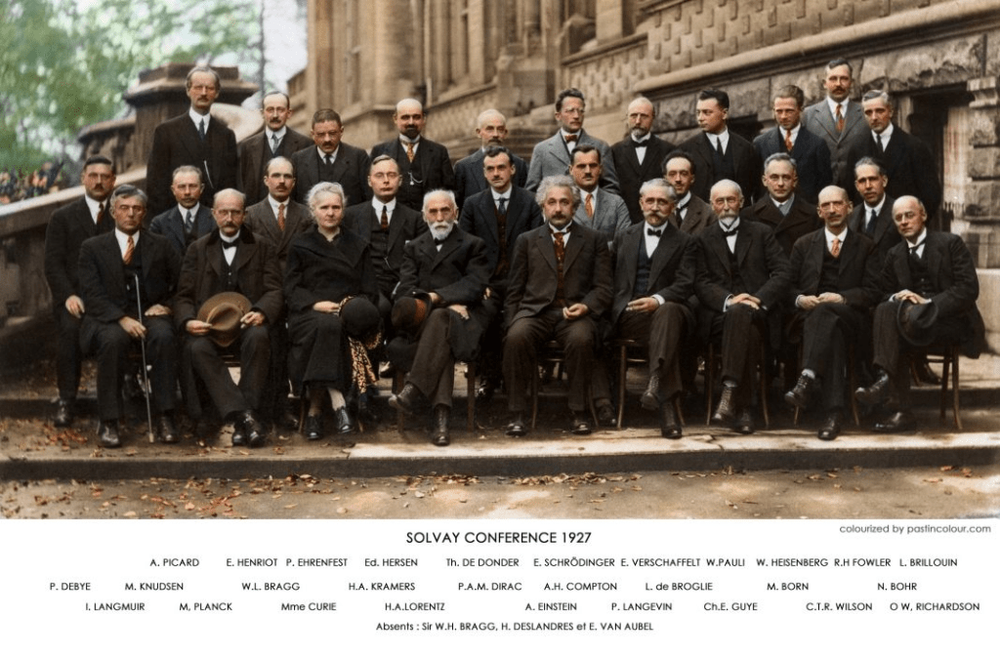

The 1927 Solvay Conference: A Gathering of the Greatest Minds in Physics
The image you've provided is a famous photograph from the fifth Solvay Conference, held in 1927 in Brussels, Belgium. This historic gathering is often considered one of the most important meetings in the history of science, particularly in the field of quantum mechanics. Let's delve into the significance of this conference, the key figures present, and the impact it had on the world of physics.
The Solvay Conferences: A Brief Overview

The Solvay Conferences were initiated by the Belgian industrialist Ernest Solvay in 1911. These conferences brought together the most prominent physicists and chemists of the time to discuss leading-edge problems in their fields. The 1927 Solvay Conference, in particular, is notable for its focus on the newly developing quantum theory, which was a hot topic and a source of great debate among physicists.
The 1927 Conference: Quantum Mechanics Takes Center Stage
The fifth Solvay Conference is famous for its intense discussions on quantum mechanics—a revolutionary theory that was reshaping the understanding of physics at a fundamental level. At the time, there was significant debate between two schools of thought: the Copenhagen interpretation, primarily formulated by Niels Bohr and Werner Heisenberg, and the deterministic views of Albert Einstein.
Bohr's interpretation posited that physical systems do not have definite properties until they are measured, emphasizing the probabilistic nature of quantum mechanics. Einstein, on the other hand, famously quipped, "God does not play dice," reflecting his discomfort with the idea of randomness in the fundamental laws of the universe.
The Attendees: A Who's Who of Physics
The photograph features 29 attendees, each a luminary in the world of physics. Here are some of the key figures present:
-
Albert Einstein - Recognized for his theory of relativity, Einstein was one of the main opponents of the Copenhagen interpretation of quantum mechanics, advocating for a more deterministic approach to physics.
-
Marie Curie - The only person to have won Nobel Prizes in both Physics and Chemistry, Curie's work on radioactivity was groundbreaking and laid the foundation for much of 20th-century physics.
-
Niels Bohr - One of the main architects of quantum theory, Bohr's Copenhagen interpretation was a central topic of debate at the conference.
-
Werner Heisenberg - Known for the formulation of the Heisenberg Uncertainty Principle, Heisenberg's work was crucial in the development of quantum mechanics.
-
Erwin Schrödinger - Famous for the Schrödinger equation in quantum mechanics and the thought experiment known as Schrödinger's cat, which illustrates the paradoxes of quantum superposition.
-
Paul Dirac - His contributions to quantum mechanics and quantum electrodynamics earned him a Nobel Prize. Dirac’s equation predicted the existence of antimatter.
-
Louis de Broglie - Introduced the concept of wave-particle duality, which was foundational to the development of quantum mechanics.
-
Max Planck - Often referred to as the father of quantum theory, Planck introduced the idea of energy quanta, which was critical to the development of modern physics.
The Legacy of the 1927 Solvay Conference
The discussions at the Solvay Conference in 1927 were intense and sometimes contentious, as they dealt with the foundational questions of quantum mechanics. The debates between Einstein and Bohr, in particular, were legendary and showcased the clash of different philosophical approaches to understanding the universe.
Despite the disagreements, the conference played a crucial role in advancing the field of quantum mechanics. The dialogue among these brilliant minds led to a deeper understanding of the quantum world and set the stage for future developments in physics.
Today, the photograph of the 1927 Solvay Conference is iconic, capturing a moment in time when some of the greatest scientific minds gathered to push the boundaries of human knowledge. The legacy of these physicists continues to influence and inspire new generations of scientists.
Conclusion
The 1927 Solvay Conference remains a symbol of scientific inquiry and debate. The gathering of so many brilliant minds in one place, all focused on understanding the fundamental nature of reality, exemplifies the collaborative spirit of science. The theories and discussions that emerged from this conference have had a lasting impact, shaping the course of modern physics and our understanding of the universe.
This image, therefore, is more than just a photograph; it's a testament to the power of human curiosity and the relentless pursuit of knowledge.
Source
Imported from rifaterdemsahin.com · 2025